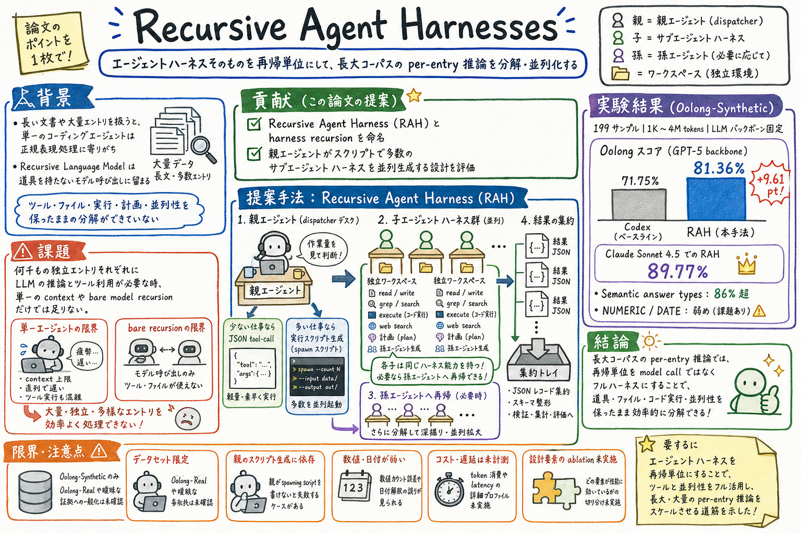

第一の貢献は、Recursive Agent Harness と harness recursion の定義である。model call ではなく full harness を recursive unit にする、という設計軸を明示する。

この論文の何がいいか
この論文は、サブエージェントを『便利な並列実行』ではなく、harness architecture の再帰として扱う。これは Codex、Claude Code、scheduled-ops、article-page-publisher のような実運用にかなり近い。
個人 AI assistant の運用では、単にモデルに長い文脈を渡すだけではなく、wiki、raw、画像、公開 repo、scheduler、skill、外部検索をまたいで作業する。RAH の見方を使うと、仕事を model call に分けるのか、full harness を持った subagent に分けるのかを判断しやすくなる。
また、RAH は『モデル能力の差』ではなく『同じ model backbone で harness を変えた差』を測ろうとしている。これは、agent 改善を prompt や model choice だけに寄せず、実行環境・道具・状態・集約の設計として扱うための足場になる。
どんな論文か
この論文の問いは、長大な文書や大量の独立エントリを処理する時、再帰する単位を何にすべきかである。従来の recursive language models は model call を再帰させるが、そこにはファイル操作、コード実行、外部ツール、計画、実行環境がない。
一方で coding agent は full harness を持つが、何千ものエントリを一つの context で扱おうとすると、個別エントリごとの LLM reasoning を諦め、正規表現や単純なスクリプト処理へ寄りやすい。つまり、モデル再帰は道具が弱く、単一 harness は分解が弱い。
Recursive Agent Harness (RAH) は、この間をつなぐ。親エージェントが作業量を見て、少数なら JSON tool-call、多数なら自分で実行スクリプトを書き、そのスクリプトから多数の subagent harness を並列生成する。各子は独立 workspace、read/write/grep/execute/web search、計画、さらに孫エージェント生成能力を持つ。
評価は Oolong-Synthetic の 199 samples、1K から 4M tokens の 13 context-length buckets で行われる。GPT-5 backbone を固定した比較で、Codex-style coding-agent baseline 71.75% に対し、RAH は 81.36% に到達する。同じ設計を Claude Sonnet 4.5 に載せると 89.77% まで伸びる。
読む価値は、単に subagent を増やせばよいという話ではない点にある。どの粒度を recursive unit にするか、どこで tool-call ではなく executable orchestration にするか、どう隔離し、どう集約し、どこで depth / cost / latency を制御するかを考えるための論文だ。
Recursive Agent Harnesses は、Recursive Agent Harness (RAH) と harness recursion を命名し、long-context reasoning で評価する論文である。
RAH の中心は、再帰単位を model call ではなく full agent harness にすること。full harness とは、filesystem tools、code execution、planning、subagent spawning を持つ実行単位を指す。
論文は、Oolong-Synthetic という長文集約 benchmark を使い、coding agent、recursive language model、RAH を比較する。狙いは、新しい primitive を発明することではなく、既に現れつつある code-first subagent spawning pattern に名前を与え、制御された比較で測ることにある。
課題と貢献
第二の貢献は、同じ GPT-5 backbone を使って Codex-style coding-agent baseline と比較し、差を model ではなく harness architecture に帰属させようとした点である。
第三の貢献は、Oolong-Synthetic の answer type と context length ごとの結果を出し、どこで効き、どこで弱いかを見せた点である。
第四の貢献は、Anthropic の dynamic workflows のような production pattern と研究上の recursive language models をつなぎ、harness recursion を実務と研究の共通語にした点である。
手法のしくみ
1
入力は、長大な文書と、そこに散らばる多数の独立エントリから答えを集約するタスクである。親エージェントはまず文書と作業量を見て、どの粒度で分解するかを決める。
2
少数の subtasks なら、親は Task tool を JSON structured call として直接呼ぶ。これは 1 から 5 entries 程度の軽い仕事向けで、script generation overhead を避ける。
3
多数の entries なら、親は executable script を書く。script 内で Task(description, prompt) を多数作り、asyncio.gather のような並列実行で subagent harness 群を起動する。
4
各 subagent は、独立 workspace、read_file、write_file、ls、glob、grep、execute、web search、planning step を持つ。兄弟 subagents とは context や memory を共有せず、結果を structured JSON record として出す。
5
必要なら subagent 自身も同じ spawning capability を使って孫エージェントを作れる。recursion depth は configurable limit で制限され、論文では default 3 とされる。
6
親は shared output file や aggregated stdout から結果を集め、最終回答へ整形する。これにより、個別エントリごとの reasoning と tool access を保ちながら、長大 corpus を分解できる。
検証結果
Oolong-Synthetic 199 samples、13 context-length buckets、1K から 4M tokens で評価される。
GPT-5 backbone 固定で、Codex-style coding-agent baseline は 71.75%、RAH は 81.36%。同じ model backbone なので、差は harness architecture によるものとして読める。
Claude Sonnet 4.5 を backbone にすると、同じ RAH design で 89.77% に到達する。論文は、harness recursion が model quality と競合するのではなく、組み合わさって伸びる可能性を示す。
answer type ごとには、USER、COMPARISON、LABEL が 86% 超で強い。一方、NUMERIC は 69.33%、DATE は n=5 で 60.00% と不安定で、数値カウントや小サンプルの影響が出る。
context length ごとの結果では、Sonnet 4.5 は 524K tokens まで 86% 超、4M tokens でも 76.7%。ただし bucket ごとの sample 数は 14 から 16 なので、精密な順位ではなく傾向として読むべき。
課題と議論
RAH は、subagent を増やす万能薬ではない。親が spawning script を書かず直接答えてしまうと、単一 coding agent に戻ってしまう。
コストは subagent 数に依存する。論文は prompt caching が効く可能性に触れるが、GPT-5 configuration の exact token / latency profile は未計測である。
評価は Oolong-Synthetic に限られる。Oolong-Real や、証拠が曖昧で per-entry extraction が単純でない領域にそのまま一般化できるかは未確認である。
code-execution spawning と JSON tool-call spawning、recursion depth、entries per subagent などの設計要素の ablation はまだない。どの部品がどれだけ効いたかは、今後の検証が必要である。
次に読むなら
- 今読むなら、§3 の Code-Execution Spawning と Subagent Architecture を先に読む。ここが実務設計に一番近い。
- 次に、§4.7 の Choosing a Recursion Strategy を読む。coding agent、model recursion、dynamic workflows、harness recursion の使い分けが短くまとまっている。
- 関連して読むなら、Code as Agent Harness、What makes a harness a harness、SkillJuror、HyperTool を並べると、harness、skill、tool granularity、subagent recursion がつながる。
- 実装へ引くなら、日次 job や article-page-publisher のような作業を、model call でよい部分、JSON tool-call でよい部分、full subagent harness に分けるべき部分へ分類するのが第一歩になる。
読後Q&A
この論文の中心問いは？
長大な corpus を分解して推論する時、再帰単位は bare model call でよいのか、それとも tools と workspace を持つ full agent harness にすべきか、という問い。
Recursive Agent Harness とは何？
親エージェントが、ファイル操作・コード実行・計画・サブエージェント生成を持つ full harness を子として起動し、その子も必要に応じて同じ能力を再帰できる設計。
普通の multi-agent と何が違う？
会話する複数 agent というより、full harness を recursive unit にして、実行スクリプトから多数の独立 subagent harness を並列起動し、結果を構造化して集約する点が中心。
なぜ JSON tool-call だけでは足りない？
API の per-turn tool-call limit があり、大量の独立エントリを処理するには足りない。RAH は親が executable script を書くことで、subagent spawning の規模を作業量に合わせる。
評価では何が改善した？
Oolong-Synthetic 199 samples で、GPT-5 backbone 固定の Codex-style coding-agent baseline 71.75% に対し、RAH は 81.36% になった。Claude Sonnet 4.5 では 89.77%。
改善はモデル差ではないと言える？
少なくとも GPT-5 backbone 固定の比較では、Codex baseline と RAH が同じ backbone を使っているため、差は harness architecture によるものとして設計されている。
どこが弱い？
NUMERIC answer type は 69.33% と低めで、カウント誤差がスコアに響く。DATE は n=5 で小さすぎる。親が spawning script を書かず直接答える失敗もある。
実運用に引くなら何が大事？
サブエージェントを増やすこと自体ではなく、どの仕事を full harness に分解するか、どこで script orchestration にするか、結果をどう隔離・集約・検証するか。
この論文の限界は？
評価は Oolong-Synthetic 限定で、Oolong-Real や曖昧な証拠が多い領域への一般化は未確認。コストと latency の詳細計測、設計要素の ablation も残っている。
次に読むなら何？
HyperTool、SkillJuror、What makes a harness a harness、Code as Agent Harness を並べると、tool granularity、skill organization、harness boundary、harness recursion がつながる。